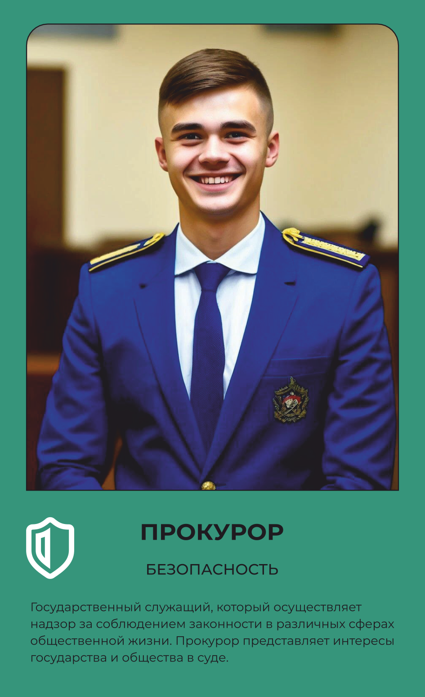

БЕЗОПАСНОСТЬ
Прокурор
Поддерживает обвинение и следит за законностью.
Основной вид деятельности
Лицо, уполномоченное представлять обвинение в суде, а также следить за соблюдением законности практически во всех сферах жизни страны.
Что делает на рабочем месте
Прокурор от имени государства поддерживает обвинение в суде по уголовным делам, представляя доказательства виновности подсудимого и требуя справедливого наказания в рамках закона. Осуществляет надзор за процессуальной деятельностью органов дознания и следствия, проверяя, не нарушены ли права подозреваемых и обвиняемых в ходе расследования. Участвует в рассмотрении гражданских и арбитражных дел, а если решение суда противоречит закону — опротестовывает приговор, определение или постановление в вышестоящей инстанции. Контролирует исполнение законов органами местного самоуправления, Следственным комитетом, ФСИН и другими организациями, следя, чтобы государственные структуры действовали в рамках правового поля. Работает с уголовным и гражданским кодексами, изучая материалы дел и судебную практику по аналогичным ситуациям. Носит форменную одежду прокурорского работника — рубашку светлых тонов, тёмный галстук, а зимой пальто с позолоченными пуговицами, — которая подчёркивает официальный статус на заседании суда.
Что производит
Участие в рассмотрении дел судами и арбитражными судами, протесты против решений, приговоров и постановлений, которые противоречат закону, а также контроль исполнения законов органами местного самоуправления, Следственным комитетом, ФСИН и другими организациями.
Оборудование и инструменты
Спецодежда
Рубашка белого и светло-синего цвета с мягким или жестким воротником
Для летней формы одежды вместо пиджака выдается рубашка с пояском светло-синего цвета, для женщин — блуза
Галстук черного или темно-синего цвета
Пальто с шестью позолоченными пуговицами и четырьмя позолоченными пуговицами на хлястике
Спецобувь
Полуботинки из натуральной кожи (для женского пола — туфли). Полусапоги из натуральной кожи и с утеплителем (для прокуроров женского пола — сапоги)
СИЗ
Для этой профессии специальные средства защиты не требуются.
Где учиться
Это официальное название и номер специальности в колледже или вузе — он понадобится при поступлении.
Где работать
Похожие профессии
Данные по профессии «Прокурор», отрасль «Безопасность». Зарплата — оценочная вилка по региону.